ismerd fel & elmélet
.(2) ren
ELMÉLET
- egyik nephron legyen juxtamedullaris / másik corticális!
- 1 tubulus_proximalis pars_convoluta
- 2 tubulus_proximalis pars_recta
- 3 tubulus_intermedius crus_descendens
- 4 tubulus_intermedius crus_ascendens
- 5 tubulus_distalis pars_recta
- 6 tubulus_distalis pars_recta
- 7 tubulus_reuniens
- 8 tubulus_colligens
- 9 ductus_papillaris
- 10 corpusculum_renale_Malpighi
- A zona_interna(medulla)
- B zona_externa(medulla) BELSŐ
- C zona_externa(medulla) KÜLSŐ
- D cortex ––––––––––––––––––––––––––––––––––––––––––––––––
- 8a.renalis ➜ 11a.interlobaris ➜ 12a.arcuata ➜ 13a.interlobularis ➜ 14vas_afferens
- 15glomerulus
- 9v.renalis ➜19v.interlobaris➜18v.arcuata➜17v.interlobularis➜16vas_efferens
- leírás
- a.renalis a hiatus_renalison át 7sinus_renalisba lép ➜ elágazik r.posterior & r.anterior
- ezekből indulnak a.interlobarisok a velőállományba sugár irányban a capsula_fibrosa felé a pyramidis_renalisok között ✽
- azonban a medulla_renalis bázisát elérve a.arcuata-kra ágazódnak
- § a.arcuata NEM alkot teljes ívet, de a v.arcuata igen

- ezek futnak a cortex és medulla között
- aa.interlobulares a kéregben futnak sugár irányban
- (további semmi extra)
- ☯ egyes a.interlobularisok küldenek r.capsularis-okat, v.interlobularisok pedig 20venula_stellata-kat a capsula_fibrosaba
- ☯ a.renalis elágazása r.anteriorra és r.posteriorra következtében a vese felezhető lap szerint nagyobb artériás vérzés nélkül
- ☯ 1pars_convolutában a hajszálerek sok helyen a glomerulusok hajszálereihez hasonlóan fenestrált_endothellal bírnak (pars_radiatában és medullában nem)
- juxtamedullaris_glomerulusokból eredő vas_efferensekből erednek 21arteriola_recta-k
- innen a 22venula_recta-kon keresztül jut vissza a v.arcuata-kba és így tovább
- 2pars_radiata
- 3columna_renalis_Bertinii
- 4capsula_fibrosa
- 5medulla_renalis
- 6papilla_renalis
- 10capsula_adiposa
- capsula_glomeruli_Bowman
- 5 lamina_parietalis(külső) ➜ 1rétegű_laphám (epithelium)
- 8 lamina_visceralis(belső) ➜ 7 podocyták
 alkotják
alkotják - köztük üreg
- hilus_glomeruli(érpólus) ➜ "polus_glomeruli(vizeleti_pólus) másik oldala"
- tehát kb. ahol extraglomerularis-mesangium sejtekből sok van
- capsula_glomeruli_Bowman 2lemeze itt megy át egymásba
- glomerulus
- vas_afferens(arteriola) ➜ kapillárisok ➜ vas_efferens(arteriola)
- 13 juxtaglomerularis_sejtek
- vas_afferens simaizomsejtjei az érpólus környékén módosultak
- renin nevű () enzimet tartalmazó szemcsék vannak benne
- kapillárisok fala fenesztrált_endothel
- mesangium-sejtek
- 12 intraglomerularis
- 2 extraglomerularis
- 1 tubulus_distalis & macula_densa
- 3 1rétegű laphám (endothel)
- 4 simaizomsejt
- 6 idegrost
- 9 fenesztrált endothel
- 10 kefeszegélyes 1rétegű kh (tubulus_proximalis pars_convoluta)
- 11 lamina_basalis
- kötőszövet
- erek
- nephron
- gyüjtőcsatornák
- tubuli_nephroni
- gyüjtőcsatornák
- nephron ➜metanephrogén_blastéma
- gyüjtőcsatornák ➜ureterbimbó
- ~1,5millió/vese (számuk a korral csökken)
- 1nephron = 1corpusculum_renale_Malpighi(vesetestecske) + tubuli_nephroni
- (funkciós egység())
- egyrétegű_köbhám
- kefeszegély borítja
- egyrétegű_köbhám
- köztes sötét sejtek
- nincs kefeszegély (csak néhány)
- egyrétegű köbhám
- ductus már 1rétegű_hengerhám
- tubulus_convoluta✽ proximalis/distalis is a corpusculum_renale_Malphigi melletti területen van
- tehát a tubulus_convoluta_distalis is visszamegy oda ➜ sőt macula_densa részével hozzáfekszik a vesetestecskének ún.érpólusához
- ---------------
- több tubulus_reuniens nyílik 1 tubulus_collectivus-ba ➜ több tubulus_colligens nyílik 1 ductus_papillaris-ba
- ~30 ductus_papillaris van a papilla_renalisnál és alkotják a felszínén az area_cribrosa-t
- halvány festődésű citoplazma (kevés sejtszervecske)
- sejthatárok jól kivehetők
- sejtmag kerek és középen helyezkedik el
- zona_externa KÜLSŐ és BELSŐ része közti határig tart a pars_recta tubulus_proximalis
- zona_externa és zona_interna határától kezdődik a pars_recta tubulus_distalis
- Ipars_convoluta(cortex)
- IIpars_radiata(cortex)
- IIIzona_externa(medulla) KÜLSŐ része
- IVzona_externa(medulla) BELSŐ része
- Vzona_interna(medulla) ➜ csak tubulus_intermedius van ✽
- naponta ~180liter fehérjementes filtrátum jut a kapillárisokból a podocyta alkotta lamina_visceralison keresztül a Bowman-tok üregbe
- ez tovább folyik a polus_glomerulin keresztül, és a visszaszívás következtében csak napi 1,5liter lesz vizelet
- tubulus_proximalis ➜ glükózt 100%ba visszaszívja
- filtrátum ?ozmotikus_koncentrációja?
- izotóniás
- hipotóniás✽ ➜ tubulus_distalis kezdeténél
- izotóniás ➜ tubulus_collectivus
- tubulus_distalis pars_convoluta-nál ADH hatására víz-visszaszívás✽
- arteriola_recta és venula_recta közti kapillárisok elszállítja a visszaszívott folyadékot
- (bazális csíkolat ➜ mitokondriumok alkotják a sejt bazális=külső részén)

- medullaban találom
- kapilláristól kell megkülönböztetni
- tubulus_intermedius
- sejtmagja jobban benyúlik a lumenbe
- nincs benne eritrocita
- citoplazma vastagabb
- érpólusnál ➜ tubulus_distalis azon része a pars_recta és pars_convoluta határán, mely hozzáfekszik az érpólushoz
- kis, ovális sejtlemez
- keskeny, magas, sűrűn elhelyezkedő sejtek
- sejtmag nagyobb sűrűsége miatt festődik sötétebbre, mint a környezete
- afferens mellett van, efferens nincs mellette ✽
- (nincs bazális csíkolat)
- (2.funkc)
- urothelium borított nyálkahártya béleli
- papilla_renalisnál hámátmenet ➜ papilla_renalis még egyrétegű_hengerhám ➜ calyx_minor már urothelium
- A nyálkahártya lamina propriája erős, sűrű szövésű elaszticus rostokban bővelkedik, csak külső rétegei lazulnak fel. Igazi submucosa nincs, a lamina propria éles határ nélkül megy át az izomfalba. Az izomfal nem nagyon erős, belső rétegeiben inkább körkörös, külső rétegeiben inkább hosszanti irányú. A vesekelyheknek a papillán való tapadása körül erősebb körkörös simaizomnyalábok fordulnak elő. Az izomfalat gyenge adventitialis kötőszövet rögzíti a vesemedencét mindenütt körülvevő zsírszövethez, ti. a vesesinust kitöltő, majd a vesekapun kívüli zsíros tokhoz.
- cortex ➜ pars_radiata (lobularis_corticalis)
- medulla
- cortex ➜ pars_radiata (lobularis_corticalis)
- medulla
- funkció ➜ vérnyomás-szabályozásban & vese-működés-szabályozásban részt vesz
- juxtaglomerularis-sejtek
- macula_densa
- extraglomerularis-mesangiumsejtek
- juxtaglomerularis-sejtek
- vas_afferens simaizomsejtjei az érpólus környékén módosultak
- tartalmaz ➜ renin(=) & lizoszómális_enzim
- extraglomerularis-mesangiumsejtek ➜ információt kizvetít a másik 2 között
- macula_densa ➜ érzékel & szabályoz (pl)
- columna_renalis_Bertini
- cortex_corticis
 ➜ nincs benne:
➜ nincs benne: - corpusculum_renale_Malpighi
- stria_medullaris
- 35stria_medullaris(=)
- medullából érkező
 pars_recta(t.p/d) & tubulus_collectivus kérgi kötege
pars_recta(t.p/d) & tubulus_collectivus kérgi kötege - vese felszínt nem éri el
- 32pars_radiata = 1db centralis stria_medullaris képezi a tengelyét
- 33pars_convoluta
- 2pars_radiata közti terület, melyet 38a.interlobularis kettéoszt
- tehát a nephron közepén pars_radiata, két oldalon a határát 1-1a.interlobularis képezi, és köztük fél-fél pars_convoluta
- benne
- 35corpusculum_renale_Malpighi
- pars_convoluta(t.p/d)
- 34 venula_stellata
- 36 vas_afferens
- 37 vas_efferens✽

- 38 a.interlobularis
- 39 v.interlobularis
- 40 av.arcuata
- 41 capsula_fibrosa
- 42 a.interlobaris
- 43 v.interlobaris
R nephron?

§ A nephronok különböző lokalizációja (kortikális vs juxtamedullaris) miatt a Henle kacsok velőállományi extenziója is különböző (hosszabb és rövidebb)  ✽
✽
✽R vérkeringés? !?
cortex_renalis
medulla_renalis

kép-számok
R corpusculum_renale_Malpighi?

§ FORRÁS: 
alkotói?
csatornák csoportosítása?
nephronok és gyűjtőcsatornák származása?
nephron ➜ száma? felosztás?
vesecsatornák ➜ felsorolás & bélelésük?
| tubuli_nephroni | |||
|---|---|---|---|
| tubulus_proximalis | 1pars_convoluta |
|
|
| 2pars_recta | ansa_nephroni = Henle-kacs |
||
| tubulus_intermedius | 3crus_descendens | egyrétegű laphám | |
| 4crus_ascendens | |||
| tubulus_distalis | 5pars_recta |
|
|
| macula_densa | |||
| 6pars_convoluta | |||
| gyűjtőcsatornák | |||
| 7tubulus_reuninens✽ |
|
||
| 8tubulus_colligens | |||
9ductus_papillaris✽  | |||
gyűjtőcsatornák jellemzése?
nephron típusok?
| juxtamedullaris | corticalis |
|---|---|
| medullához közeli a vesetestecske | capsula_fibrosához közeli a vesetestecske |
| kb. 20% ilyen | kb. 80% ilyen |
| az ansa_nephroni hosszú és belóg egészen a zona_interna-ig
|
az ansa_nephroni rövid ➜ csak zóna_externaig lóg be ✽ |
| 4vasa_recta VAN | vasa_recta NINCS |

funkciós leírás (csak főbb dolgok)
tubulus proximalis vs distalis megkülönböztetése mikroszkópban?

| szempont | tubulus_proximalis | tubulus_distalis |
|---|---|---|
| festődés | sötétebb(erősebb acidophil) | világosabb |
| sejt | magasabb✽ | alacsonyabb |
| lumen | csillag alakú | tágabb kerek |
| sejthatár | alig,nem kivehető | jobban kivehető |
| kefeszegély | van(de nem látható, csak sejthető) | nincs |
tubulus_intermedius ➜ hol keressem metszeten? mitől különböztessem meg és hogyan?
macula_densa ➜ hol keressem metszeten? mitől különböztessem meg és hogyan? mely arteriola van mellette?
vesemedence
vesetestecske és vesecsatornák hol fordulnak elő?
| rész | előfordul |
|---|---|
| corpusculum_renale_Malpighi | cortex ➜ pars_convoluta (lobularis_corticalis) |
| tubulus_proximalis - pars_convoluta | |
| tubulus_proximalis - pars_recta |
|
| tubulus_intermedius | |
| tubulus_proximalis - pars_recta | |
| tubulus_proximalis - pars_convoluta | cortex ➜ pars_convoluta (lobularis_corticalis) |
| tubulus_reuniens | cortex |
| tubulus_colligens |
|
| ductus_papillaris | medulla |
juxtaglomerularis_apparatus ➜ funkció? részei?
részei
leírás
kéregállomány?

felosztás
31lobulus_corticalis a szövetegysége
egyéb a képen
FM – tavalyi jegyzeteim
- tubulus proximalis vs distalis
- "rétegek"
- cortex
- medulla
- zona interna
- zona externa
- gyüjtőcsatornák
- kapillárisok
- lamina parietalis vs visceralis (capsula_glomeruli_Bowman) --------------------
- pars recta vs convoluta
- macula_densa
- vas afferens vs efferens
- vízelvezetőpólus & érpólus
- sejtmag ➜ podocyta vs fenesztrált_endothel --------------------
- (tubulus_reuniens)
- (mesangiumsejtek ➜ extraglomerularis vs intraglomerularis)
- (juxtaglomerularis-sejtek)
vesepapilla, gyűjtőcsatornák beszájadzása
-
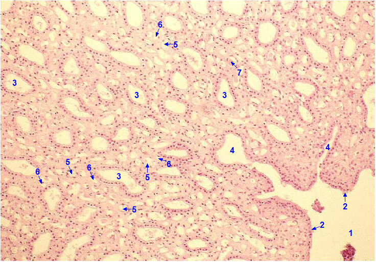
1► pelvis_renalis (calyx_minor) lumene
2► 1rKh a vesepapilla csúcsán
3► ductus_papillaris(Bellini)
4► gyűjtőcsatorna beszájadzása
5► tubulus_intermedius
6► kapilláris
(7)► hyalin = kicsapódott fehérje
zona_interna(medulla) (hosszmetszet)
-
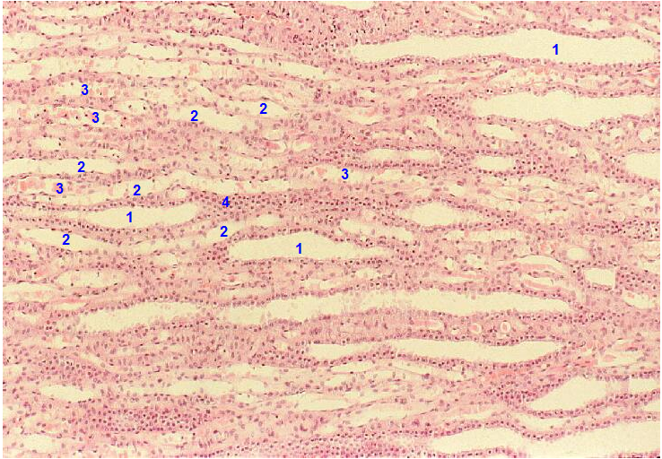
1► gyűjtőcsatorna
2► tubulus_intermedius
3► kapilláris
(4)► gyűjtőcsatorna fala
zona_externa(medulla)
-
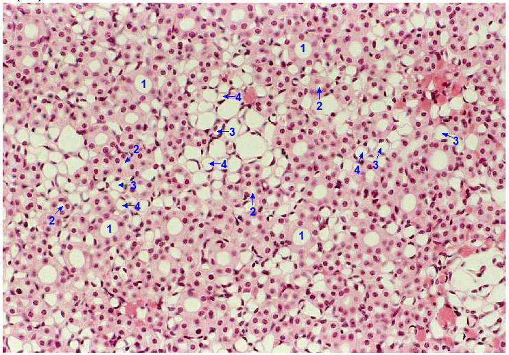
1► gyűjtőcsatorna
2► pars_recta tubulus proximalis/distalis
3► tubulus_intermedius
4► kapilláris
zona_interna(medulla)
-
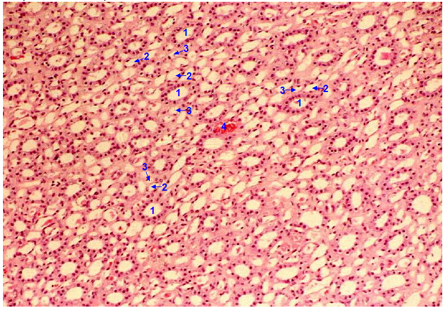
1► gyűjtőcsatorna
2► tubulus_intermedius
3► kapilláris
4► venula
zona_externa(medulla)
-
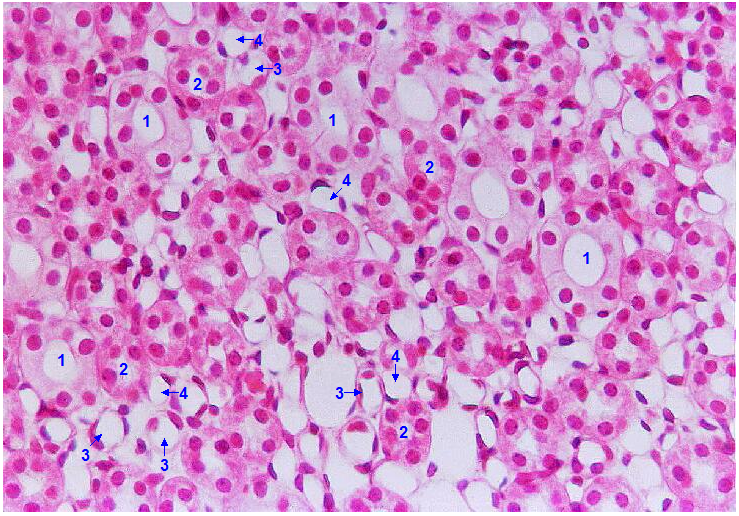
1► gyűjtőcsatorna
2► pars_recta
3► tubulus_intermedius
4► kapilláris
cortex
-
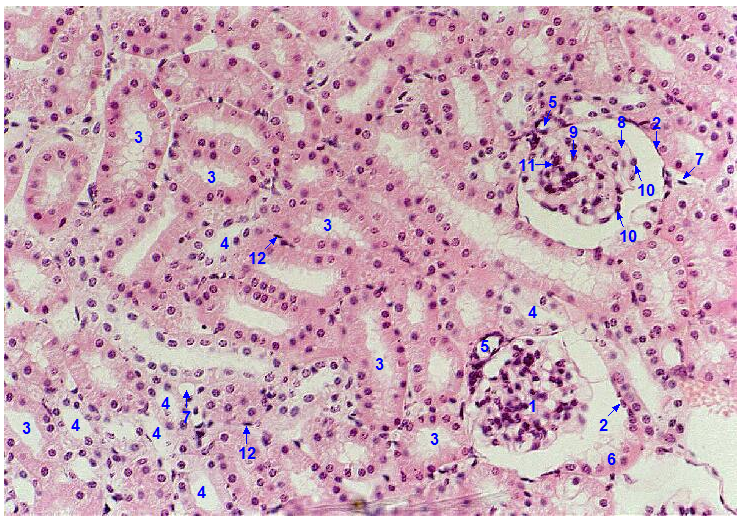
1► glomerulus
2► lamina_parietalis capsula_glomeruli_Bowman
3► pars_convoluta tubulus_proximalis
4► pars_convoluta tubulus_distalis
5► efferens arteriola
6► polus_glomeruli = vizeleti_pólus ➜ tubulus_proximalis kezdete
(7)► kapilláris
(8)► kapilláris
(9)► kapilláris
10► podocyta ~ lamina_visceralis capsula_glomeruli_Bowman
11► mesangiumsejtek
(12)► fibrocyta
cortex
-
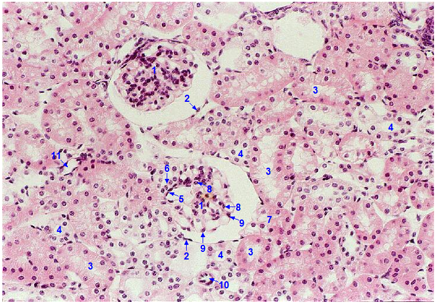
1► glomerulus
2► lamina_parietalis capsula_glomeruli_Bowman
3► pars_convoluta tubulus_proximalis
4► pars_convoluta tubulus_distalis
5► afferens arteriola ✽
6► macula_densa
7► polus_glomeruli = vizeleti_pólus ➜ tubulus_proximalis kezdete
8► endothelsejt
9► podocyta ~ lamina_visceralis capsula_glomeruli_Bowman
10► precapillaris arteriola
11► postcapillaris venula
cortex
-
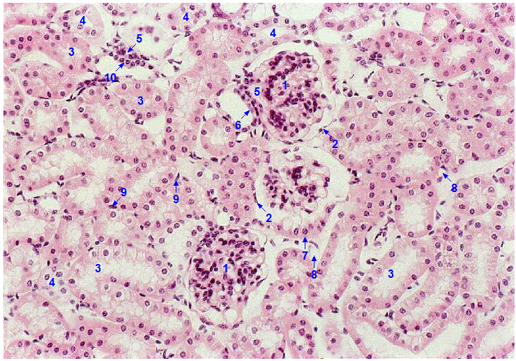
1► glomerulus
2► lamina_parietalis capsula_glomeruli_Bowman
3► pars_convoluta tubulus_proximalis
4► pars_convoluta tubulus_distalis
5► afferens arteriola
6► macula_densa
7► polus_glomeruli = vizeleti_pólus ➜ tubulus_proximalis kezdete
8► kapilláris
(9)► fibrocyta
10► macula_densa ()
cortex
-
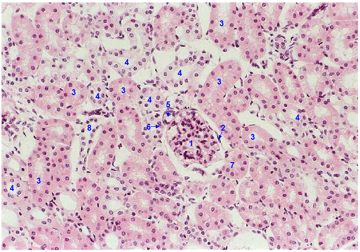
1► glomerulus
2► lamina_parietalis capsula_glomeruli_Bowman
3► pars_convoluta tubulus_proximalis
4► pars_convoluta tubulus_distalis
5► hilus_glomeruli = érpólus ~ afferens arteriola
6► macula_densa
7► polus_glomeruli = vizeleti_pólus ➜ tubulus_proximalis kezdete
8► tubulus_reuniens
.(3) vesica_biliaris
ELMÉLET - tavalyi jegyzet alapján
- tunica_mucosa
- 1rHh mikrobolyhos
- lamina_propria ➜ nyálkahártya-redők
- tunica_muscularis (réteg nincs) (simaizom)
- tunica_adventitia / (sub)serosa
- intrahepatikus::: epekapilláris ➜ Hering-csatorna ➜ (=) ductus_interlobularis ➜ ductus_hepaticus dexter/sinister ➜ ductus_hepaticus_communis 2
- extrahepatikus::: képen
- 1rHh kutikulával
- lamina_muscularis
- tela_submucosa
epeút?
epehólyagot mi béleli?
epehólyagban mely rétegek hiányoznak?
(azért, mert csupán egy kivezetőcső megvastagodása) HistoCD + füzet
ismerdfel
-
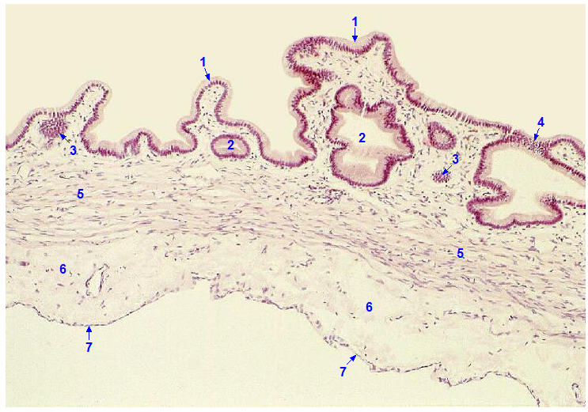
1► epithelium = 1rHh
(2-3)►
4► nyálkahártyaredő
5► tunica_muscularis
6► tela_subserosa
7► tunica_serosa, hashártya
ismerdfel
-
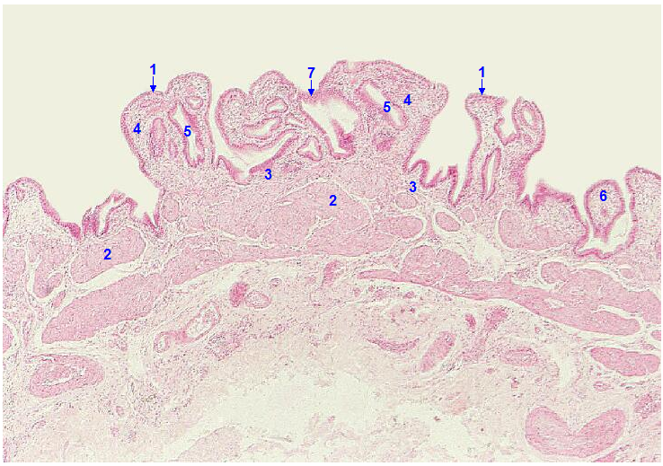
1► epithelium = 1rHh
2► tunica_muscularis
3► lamina_propria
4► lamina_propria
(5-7)► nyálkahártyafülke, melyet a metszési sík izolált, és így önálló lumennek tűnik, stb. (lényeg, hogy a redő a metszési sík következtében lesz ilyen a képen)
.(4) epididymis
ELMÉLET - tavalyi jegyzet alapján
- FONTOS!!! téglalapot rajzoljak inkább, aminek alja és teteje kissé domború
- ductulus_efferens_testis vs ductus_epididymis
- ductus_epididymis ➜ 2mHH + stereocilium
- ductulus_efferens_testis ➜ 1m/2m-Hh/Kh + kinocilium
- 2mHH ➜ fősejt & bazális sejt
- simaizom + ktsz (veszi körbe a csatornákat) --------------------
- tunica_albuginea ➜ kollagénrostos kötőszövet
- tunica_vaginalis_testis lamina_parietalis ➜ mesothel-sejtek
- tömött kollagénrostos kötőszövet
- tubulus_seminiferus_convolutus(=) (kanyarulatos)
- 1zárt hurkot alkotó kanyarulatos csatornából áll 1lobulus
- mediastinum_testisnél összefutnak
- tubulus_seminiferus_rectus (egyenes)
- rete_testis (hálózat)
- tubulus_seminiferus_convolutus
- laza kötőszövet, benne:
- Leydig-sejtek (szigetet alkotnak)
- erek
- 1rétegű köbhám
- 1rétegű köbhám/laphám
- tesztoszteront termelnek
- (Reinke-fehérjekristalloidokat tartalmaznak, de nemlátszik, csak elektronmikroszkóppal)
- spermatogenesis
- pubertáskorban kezdődik el
- tubulus_seminiferus_contortus
- spermatogonium(=)
- lamina_limitans mellett találhatók közvetlen (Sertolli-sejteken kívül)
- osztódik mitózissal ➜ kb fele A típusú, fele B típusú lesz
- A típusúnál nem történik változás, csinálja tovább ugyanezt
- B típusú 1szer osztódva mitózissal 2primer_spermatocitává válik
- primer_spermatocita(=) ➜ megkezdi meiózist
- primer_spermatocita ➜ meiózis I ➜ 2db szekunder_spermatocita
- szekunder_spermatocita ➜ meiózis II ➜ 2db sperm()ida
- spermio()genesis ➜ kb. 2hónap alatt a spermatida átalakul spermiummá (sejtdifferenciálódás útján, tehát osztódás nincs már!)
- kettő egymástól nehezen különböztethető meg, ezért...
- ...mivel secunder állapot csak nagyon-rövid ideig van, ezért feltételezhetően primer lesz látható
- kitöltik a herecsatornát ➜ lamina_limitanstól a lumenig nyúlik
- termelnek ➜ piruvát, laktát, inhibin ✽
- fagocitózis
- citoplazmájukban zajlik a spermiogenezis
- fej
- sejtmag [n]
- kívülről acrosoma borítja ➜ benne lévő enzimek biztosítják zona_pellucidán való átjutást megtermékenyítés során
- nyak ➜ mitokondriumok ölelik körbe az ostort benne
- farok
- ostoros mozgást ezzel végzi
- keresztmetszet ➜ 9pár mikrotubulus körben, 2db középen (kinocilium, undulipódium)
- Golgi-készülékből fejlődött ki a spermiogenesis során
- magtól távolabbi centriolum ➜ farok
- citoplazmája nagyrésze lelökődik ✽
- FSH hormon szabályozza (hipofízis termeli)
- mitokondriumokban glikolízis
- normál ➜ 100millió/ml (1erekciónál 2-3ml ondó ürítés van)
- terméketlen ➜ 20millió/ml
- ductulus_efferens_testis ➜ caput
- ductus_epidiymidis ➜ caput & corpus & cauda
- csillag alakú lumen
- magas hengerhámsejtek / alacsony köbhámsejtek
- kinocilium borítja egy részét
- körülveszi vékony simaizomréteg
- lumenben spermiumok
- kétmagsoros stereociliumos hengerhám
- körülveszi vékony simaizomréteg
- lumenben spermiumok (+makrophagok)
- tereli a spermiumokat rete_testisből ductus_epididymidis fele
- egyre vastagabb a simaizomréteg
- egyre vékonyabb a hámréteg
- egyre kevésbé kanyargós a csatorna
- caput ➜ corpus & caudaban már nem lenne ductulus_efferens_testis
R testis - transversal

1 septula_testis
2 lubulus_testis
3 mediastinum_testis
4 plexus_pampiniformis
5 a.testicularis
6 fascia_spermatica_interna
7 cavitas_scroti
8 tunica_vaginalis_testis l.p./l.v.
9 tunica_albuginea
10 m.cremaster
11 fascia_spermatica_externa
12 tunica_dartos
13 cutis
14 septum_scrotis
15 epididymis
16 ductus_deferens
R testis - saggital

1 septula_testis
2 lobuli_testis
3 mediastinum_testis
4 rete_testis
5 tunica_albuginea
6 tubulus_seminiferus_contortus
7 tubulus_seminiferus_rectus
8 tunica_vaginalis_testis lamina_visceralis (=)
9 caput_epididymidis
10 ductulus_efferens_testis
11 ductus_epididymidis
12 ductus_deferens
FM-nél figyelnivalók
▉ tunica_albuginea milyen szövet? septula_testis milyen szövet?
▉ csatornák típusa & elhelyezkedés?
▉ parenchymát mi alkotja?
▉ tubulus_seminiferus_convolutus mi veszi körül?
▉ tubulus_seminiferus_rectus mi béleli?
▉ rete_testis_Hallerit mi béleli?
▉ Leydig-sejtek szerepe?
▉ neve? mikor? hol történik?
▉ leírása?

▉ képen milyen spermatocita látható?
▉ Sertolli dajkasejtek szerepe?(4)
▉ hímivarsejt felépítése?

▉ spermiogenesis ➜ leírás? szabályozása?
▉ mozgáshoz energiaszükségletét mi biztosítja?
▉ hímivarsejt száma / kiürített ondó?
▉ vesecsatornák a mellékhere mely részeiben találhatók?
▉ ductulus_efferens_testis jellemzés?
▉ ductulus_epididymidis jellemzés?
▉ kinociliumok szerepe?
▉ ductulus_epididymidis változása cauda irányába?
▉ mely szakaszon készült a metszet és miért?
mellékhere csatornái
-
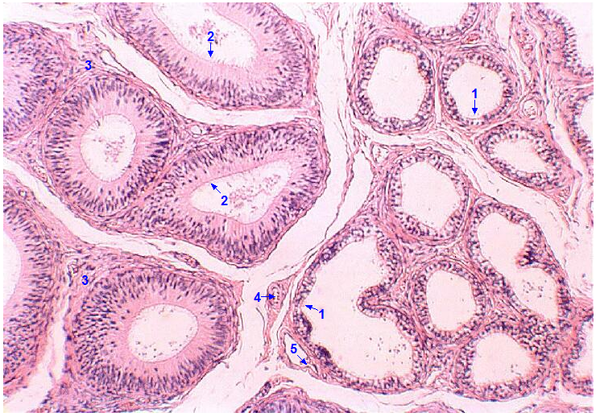
1► ductulus_efferens_testis ➜ kinociliumos 1m/2m-Kh/Hh
2► ductus_epididymidis ➜ stereocilium TmHh
3► simaizom
4► precapillaris arteriola
(5)► postcapillaris venula
ductulus_efferens_testis
-
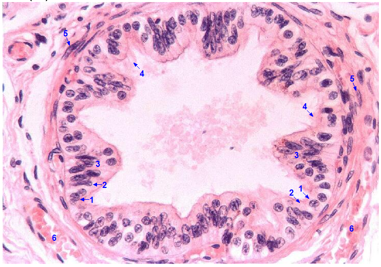
(1)► Kh-sejt
(2)► Hh-sejt
3► TmHh
4► kinocilium
5► simaizom
6► postcapillaris venula
ductus_epididymidis
-
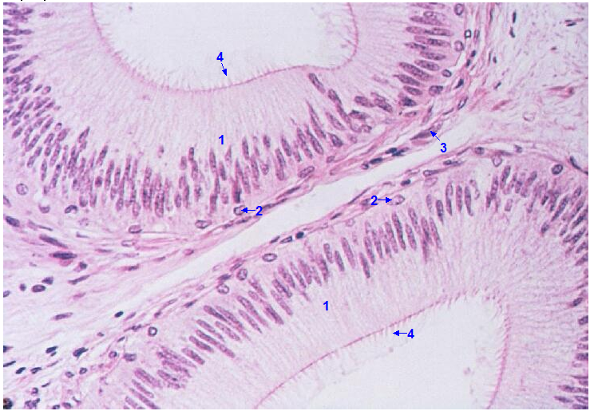
1► fősejt
2► bazális sejt
1+2► TmHh
3► simaizomsejt
4► stereocilium
.(5) oesophagus
ELMÉLET - tavalyi jegyzet alapján
- TENSLh
- lamina_muscularis SzövettanCD
- glandulae_oesophagae ➜ tela_submucosa-ban van
- glandulae_cardiacae = Schaffer-mirigy ➜ lamina_propria-ban van
- solitaer_nyirokfolliculus (MALT)
- glandulae_cardiacae = Schaffer-mirigyek ➜ felső és alsó részénél fordulnak csak elő
- kötőszövet
- glandulae_oesophagae ➜ mucosus-mirigyek, oesophagus fő mirigyei
- plexus_submucosus_Meissneri
- pars_abdominalist leszámítva adventitia (annál ugyanis "serosák")
epithelium mi alkotja?
kezdeti szakaszában mely réteg hiányzik?
2 előforduló mirigyet hogy tudom egymástól elkülöníteni?
lamina propria-ban mi található?
tela_submucosa-ban mi található?
tunica_adventitia vagy tela_subserosa és tunica_serosa van benne?
FM – tavalyi jegyzeteim
- tunica_mucosa
- eipthelium TENSLH
- lamina_propria
- lamina_muscularis
- tela_submucosa
- tunica_muscularis
- stratum_circulare
- stratum_longitudinale
- tunica_adventitia --------------------
- glandulae_oesophagae ➜ tela_submucosaban
- glandulae_cardiacae(Schaffer)
- lamina_propria-ban
- de csak a nyelőcső felső és alsó részénél fordulnak elő
- plexus_submucosus_Meissneri ➜ tela_submucosaban
- plexus_mientericus_Auerbachi ➜ tunica_muscularis 2rétege közt --------------------
- (harántcsíkolt vs simaizom)
kezdeti szakasza
-
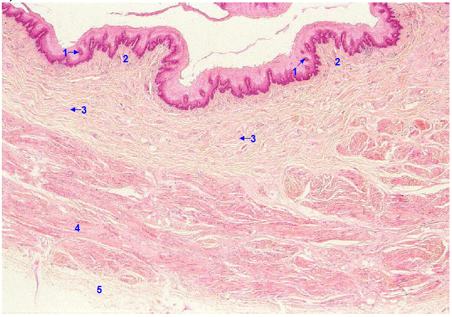
1► TeNsLh
2► lamina_propria
3► tela_submucosa
4► tunica_muscularis ➜ harántcsíkolt
5► tunica_adventitia
nincs még lamina_muscularis
nincs még tunica_muscularis-nak 2jól elkülönülő stratumja
középső szakasza
-
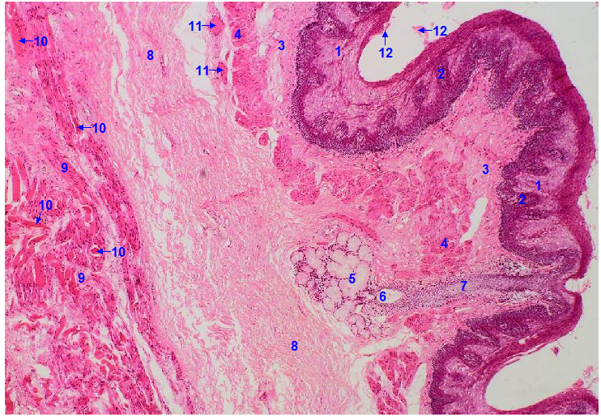
1► TeNsLh !!!
2► stratum_germinativum
3► lamina_propria
4► lamina_muscularis
5► glandula_oesophagae (mucosus)
6► kivezetőcső lumene
7► kivezetőcső
8► tela_submucosa
9 + 10► tunica_muscularis = harántcsíkolt + sima
(11)► venula
(12)► leváló hámsejtek
középső szakasza
-
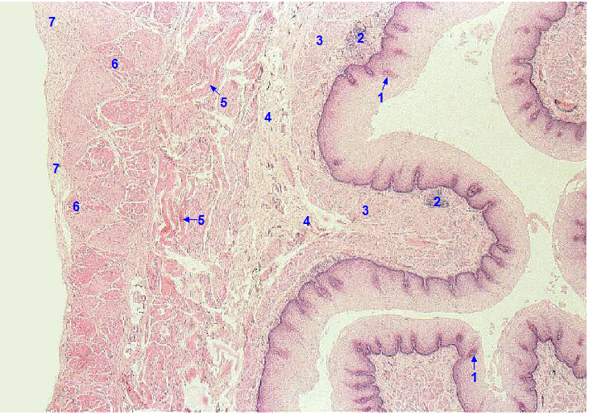
1► TeNsLh !!!
2► solitaer nyiroktüsző
3► lamina_propria
4► tela_submucosa
5► stratum_circulare (tunica_muscularis)
6► stratum_longitudinale (tunica_muscularis)
7► tunica_adventitia
tunica_muscularis ➜ harántcsíkolt + sima
oesophagus
-
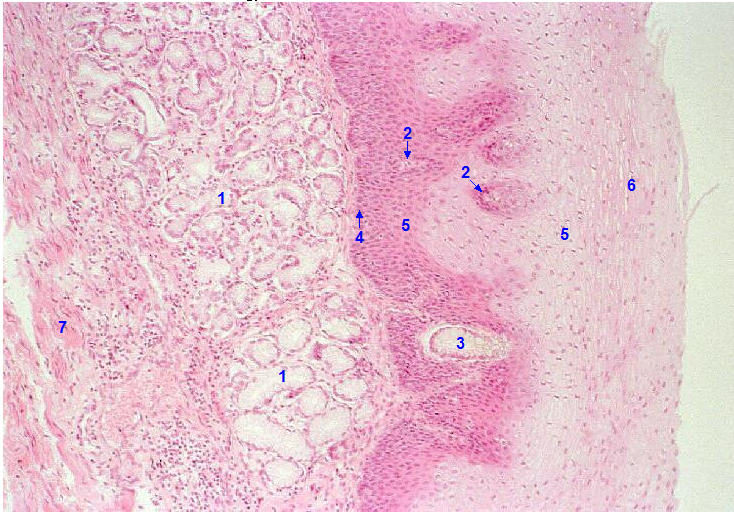
1► glandulae_cardiacae(Schaffer) ✽
(2)► kötőszöveti papillák
(3)► kivezetőcső
4► stratum_germinativum
5► stratum_spinosum
6► stratum_superficiale
7► lamina_muscularis
.(7) penis
széli része
-
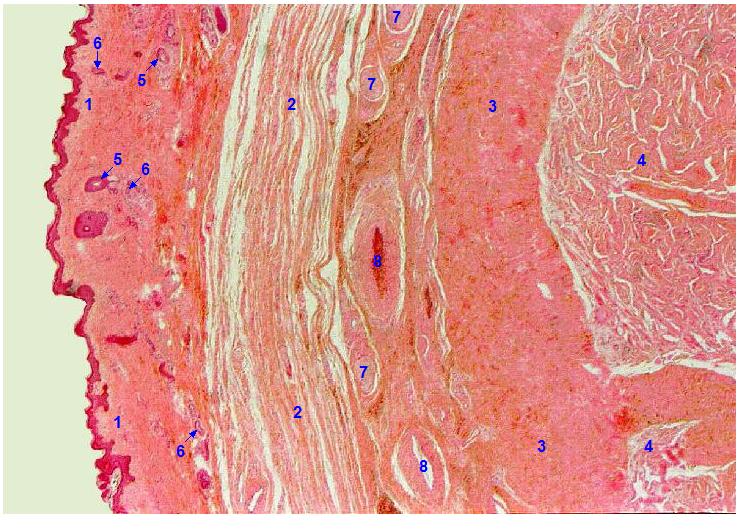
1► cutis
2► fascia_penis
3► tunica_albuginea
4► corpus_cavernosum
(5)► csökevényes szőrtüsző fagggyúmirigyekkel
(6)► verejtékmirigy
7► nn.dorsales_penis
8► kis véna

mély része
-
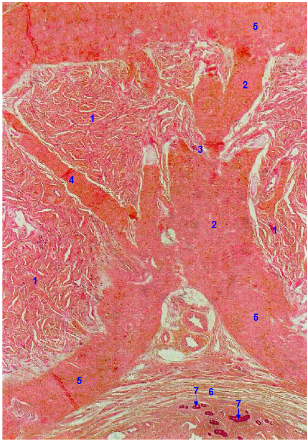
1► corpus_cavernosum
2► septum_penis
(3)► összeköttetés a két corpus_cavernosum között
4► járulékos septum
5► tunica_albuginea
6► fascia_profunda(Buck)
7► paraurethralis járatok, maga a húgycső már nem látszik
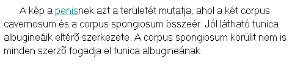
corpus_spongiosum
-
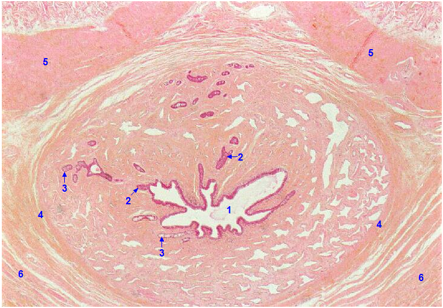
1► urethra
2► paraurethralis járat
3► glandulae_urethrales_Littré (mucosus) ➜ paraurethrális járatokba nyílik
4► fascia_profunda(Buck)
5► tunica_albuginea
6► fascia_penis
urethra(pars_spongiosa) - TrHh
-
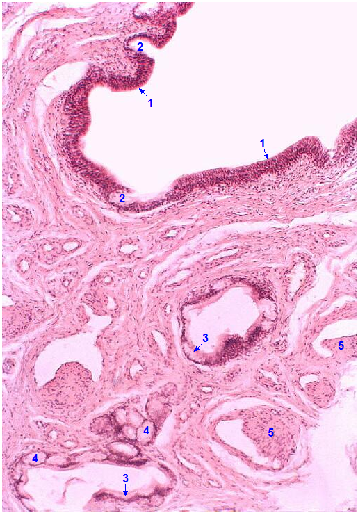
1► TrHh
- Megjegyzés► endoepithelialis-mirigy és glandulae_urethrales_Littré ugyanolyan mucosus-sejtekből épül fel csak helyzetük más!
2► mucosus endoepithelialis mirigy
3► paraurethralis járat, falában endoepithelialis mirigy(nyíl)
4► glandulae_urethrales_Littré (mucosus!) ➜ paraurethrális járatokba nyílik
5► intimapárna az erekben
intimapárna
-
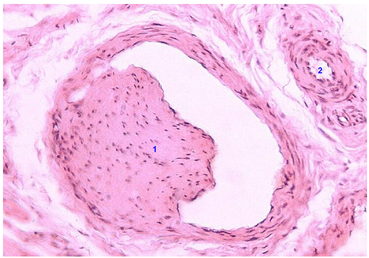
1► intimapárna, a belsejében simaizom
2► arteriola
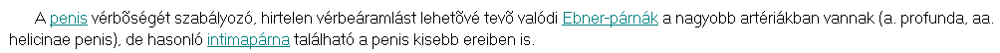
.(8) vesica_urinaria
-
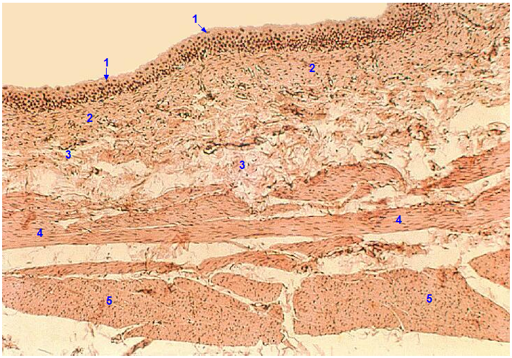
1► urothelium ✽
2► lamina propria (tömöttebb szerkezetű)
3► tela_submucosa (lazább szerkezetű)
4► tunica_muscularis – stratum_circulare
5► tunica_muscularis – stratum_longitudinale
ELMÉLET
- lamina_muscularis nincs ✽
- tela_submucosa nincs a trigonum_vesicae területén (trigonum vesicae mesodermális eredetű) –––––––––––––––––––––––––––––––––––––
- tunica_mucosa ➜ !? trigonum_vesicae területét leszámítva redőzött
- epithelium ➜ urothelium
- ernyősejtek (csak ez nem ér le közülök a bazális membránra)
- polygonális
- bazális
- lamina_propria ➜ laza rostos ktsz (sok elasztikus rost) ()
- tela_submucosa ➜ laza rostos ktsz (sok elasztikus rost)
- tunica_muscularis (sok kollagénrost)
- stratum_longitudinale_internum
- stratum_circulare
- stratum_longitudinale_externum
- tunica_adventitia (esetleg subserosa, fennti részén)
- laza ktsz
- erek
- idegek
- zsírszövet
- esetleg ganglion-sejt található
rétegek
.(9) szem
ELMÉLET
- 1rKh felülről nézve
- natív ➜ nincs festve
- a sejteket melaninszemcsék töltik ki ➜ ezeket látjuk sötét színűnek, minden más világos
- sejthártyában és sejtmagban nincs melaninszemcse ➜ azok világosak
pigmenthám – natív
-
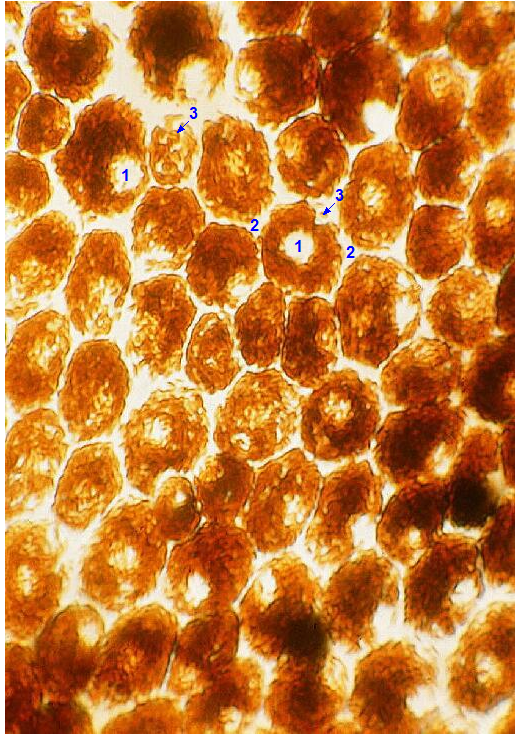
1► sejtmag
2► sejthatár
3► melaninszemcsék
.(10) colon
ELMÉLET
FM – tavalyi jegyzeteim
- lamina_epithelialis = 1HH + kehelysejt
- Lieberkühn-crypták
- solitaer_folliculus
- lamina_muscularis
- tela_submucosa
- tunica_muscularis
- stratum_circulare
- plexus_myentericus_Auerbachi
- stratum_longitudinale TENIA
- tela_subserosa & tunica_serosa
-
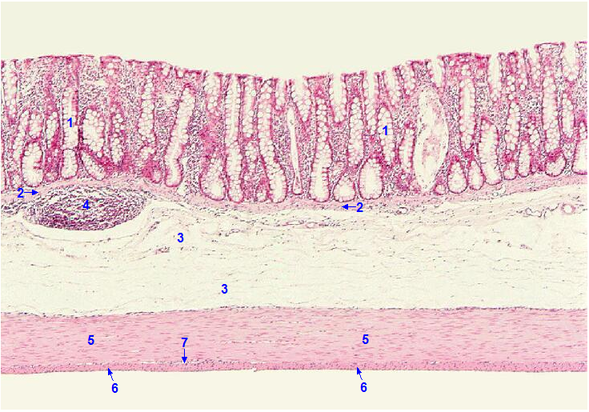
1► Lieberkühn-kripták ➜ lamina_epithelialis = 1rHh kehelysejtekkel
2► tunica_mucosa ➜ lamina_muscularis
3► tela_submucosa
4► soliter-nyiroktüsző
5► tunica_muscularis ➜ stratum_circulare
6► tunica_muscularis ➜ stratum_longitudinale
7► plexus_myentericus_Auerbachii
.(12) prostata
ELMÉLET
- tömött_fibroelasztikus_ktsz
- simaizomsejt
- 20-30db
- periurethal = mucosus
- central = submucosus
- periferias (=fő)
- prostatakő
- besűrűsödött váladék
- 1r/Tm Kh/Hh
- pseudoapokrin ➜ valójában merokrin
- ugyanis apokrin esetében a membrannal együtt válna le a szekrétum
- merokrin esetében pedig csak exocitózissal jut ki a szekrétum ✽
- medencefenék izomzata (nem mindig van benne)
- felső 1/3 ➜ urothelium
- középső 1/3 ➜ Tr/Tm Hh
- alsó 1/3 ➜ TENSLH
- () ()
- pars_prostatica ➜ urothelium
- pars_membranacea ➜ TrHh
- pars_spongiosa
- többrétegű hh + néhány kehelysejt benne
- fossa_navicularistól már TENSLH
- A húgycső nyálkahártyájának proximal felé benyúló vak mellékjáratai a lacunae urethrales. Ezek mellett a corpus spongiosumban kétféle, nagyobbára mucinosus, mirigy található: a hámon belüli, ún. endoepithelialis mirigyek és a submucosába benyomuló nagyobb, elágazó mucinosus mirigyek, a Littre-féle mirigyek
mi alkotja ➜ stroma? tok?

mirigyek száma?
mirigyek típusai?

corpus_amylaceum ➜ magyarul? "összetétele mi"?
mirigyhám alkotója?
milyen szekréció zajlik? magyarázd!
haráncsíkolt izmok a szélén?
♀ hámja?
♂ hámja?
♂ 2.funkc.290
széli része, főmirigyek
-
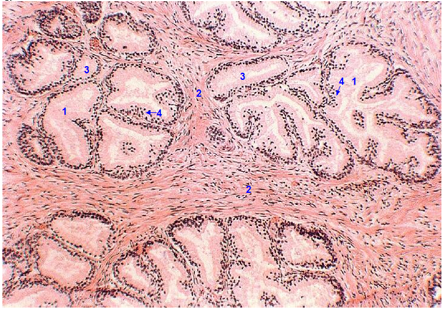
1► végkamrák ()
2► simaizom
3► végkamra részlete, mely a metszési sík miatt különállónak tűnik
4► ferde metszési síkban az egyrétegű hám többrétegűnek tűnik
JR► végkamrák között simaizom van ➜ ez segít elkülöníteni a vesicula_seminalistól
húgycső részletével
-
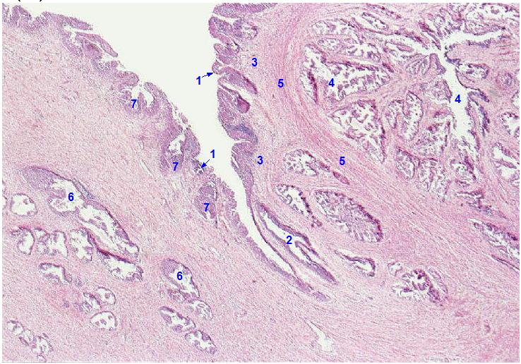
1► urethra epitheliuma - TrHh
2► főmirigyek kivezetőcsövének benyílása
3► colliculus_seminalis
4► colliculus_seminalis mirigyei
5► tokszerűen rendeződött simaizom
6► submucosus mirigyek
7► mucosus mirigyek
idősebb korban
-
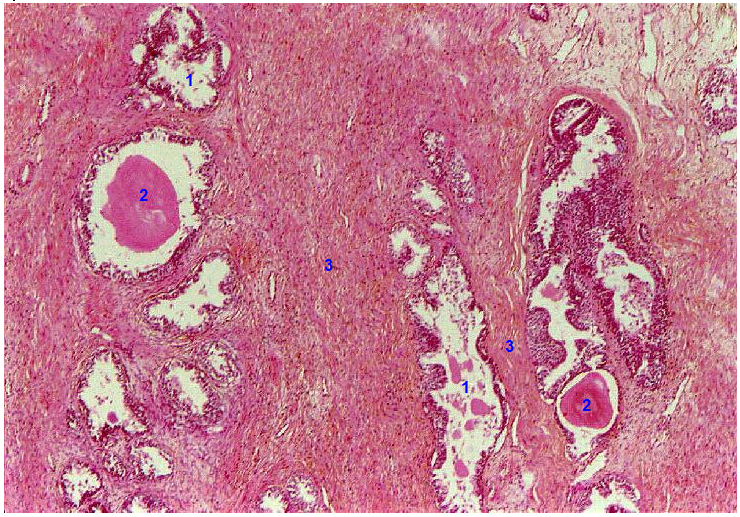
1► végkamrák ()
2► corpus_amylaceum = prostatakő
3► simaizom
JR►
• idősebb korban több az izom, kevesebb a mirigyállomány
• "kövek" (azaz besűrűsödött váladékok) más mirigyekben (vesicula_seminalis, nyálmirigyek) is előfordulhatnak
FM – tavalyi jegyzeteim
- corpus_amylaceum-ok = prostatakövek ✽
- mirigyhám ➜ 1r/Tm-Kh/Hh
- stroma = tömött_fibroelasztikus_ktsz + simaizomsejtek
- pseudoapokrin-mirigyek (valójában merokrin)
- urethra (pars_prostatica) ➜ epithelium TrHh
- colliculus_seminalis
- haráncsíkolt izmok a szélén ➜medencefenék izomzata (nem mindig van benne)
-------------------- ezek lehetnek benne, de nem feltétlen
- (ductus_ejaculatorius)
- (tok ➜ tömött_fibroelasztikus_ktsz és simaizomsejtek)
- (vegetatív ganglionsejtek ➜ prostata adventitiajaban)
.(77) glans_penis
praeputium & glans_penis
-
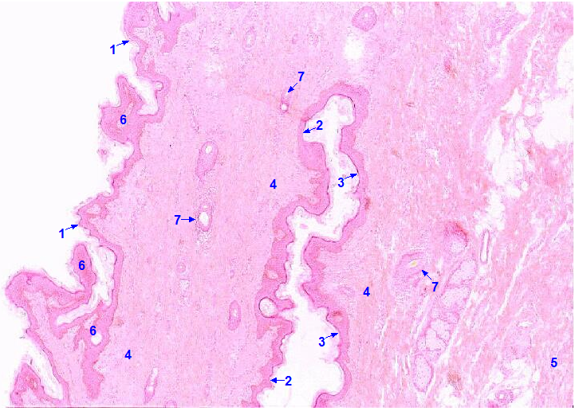
1► praeputium külső hámja ➜ TESLH
2► praeputium belső hámja ➜ TESLH (enyhén S)
3► glans_penis hámja ➜ TESLH (enyhén S)
4► cutis
5► glans_penis felszíne (corpus_spongiosum folytatása)
6► metszési sík itt ferdén érte a bőrt
(7)► !!!csökevényes szőrtüsző faggyúmiriggyel!!!
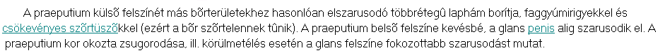
FM-nél további figyelnivalók
- faggyúmirigy (szőrtűsző nincs) ➜ két hám alatt (belső+glans)
- Ebner-intimapárnák
- urethra hámja (metszet típusától függ)
- proximalis esetében ➜ TrHh
- distalis esetében ➜ TESLH - fossa_navicularis
.(91) ureter
ELMÉLET
- mirigyek nincsenek
- tela_submucosa & lamina_muscularis nincs
- csillag alakú lumen –––––––––––––––––––––––––––––––––––––
- tunica_mucosa
- epithelium ➜ urothelium
- lamina_propria
- laza rostos kötőszövet (sok elasztikus rost)
- redőzött ➜ csillag alakú lumen
- tunica_muscularis (sok kollagénrost)
- stratum_longitudinale_internum (gyengébb)
- stratum_circulare (erősebb)
- stratum_longitudinale_externum ➜ ostium_ureter környéki szakasza tartalmazza csak!!!!
- tunica_adventitia
- laza ktsz
- erek
- idegek
rétegek
-
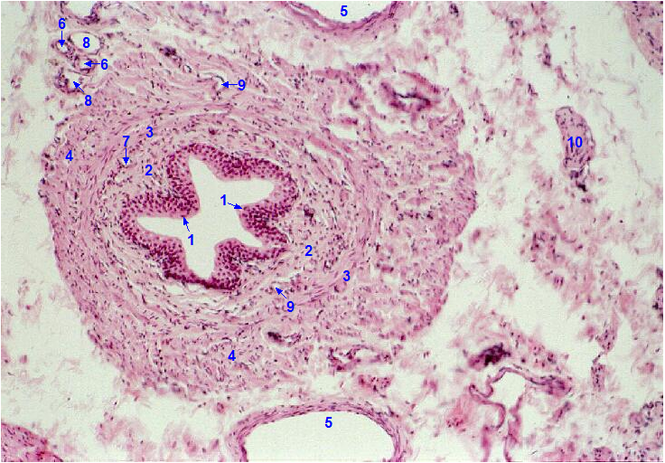
1► urothelium ✽
2► lamina_propria
3► tunica_muscularis – stratum_longitudinale
4► tunica_muscularis – stratum_circulare
5► kis véna
6► arteriola
7► precapillaris_arteriola
8► venula
9► postcapillaris_venula
10► ideg
.(96) szem
elülső és hátulsó szemcsarnok
-
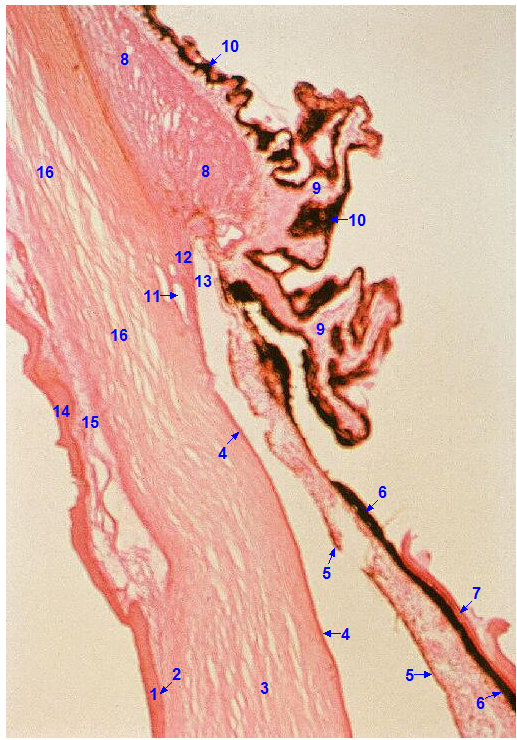
1► cornea hámja
2► lamina limitans anterior (Bowmann-hártya)
3► substantia_propria_corneae
4► lamina limitans posterior (Descemet-hártya) és a cornea endothel-sejtjei
5► iris endothelje
6► iris pigmenthámja
7► szemlencse része, mely hozzátapadt az irishez, és levált a lencséről
8► corpus_ciliare
9► processus_ciliares
10► pars_coeca_retinae
11► Schlemm-csatorna
12► ligamentum pectinatum iridis
13► csarnokzug
14► kötőhártya - TENSLH!
15► episcleralis laza ktsz
16► sclera
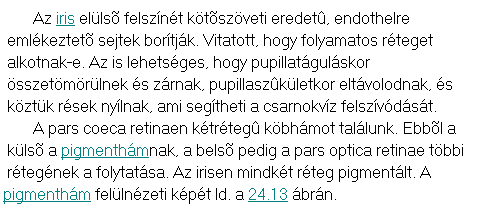
szemfenék rétegei
-
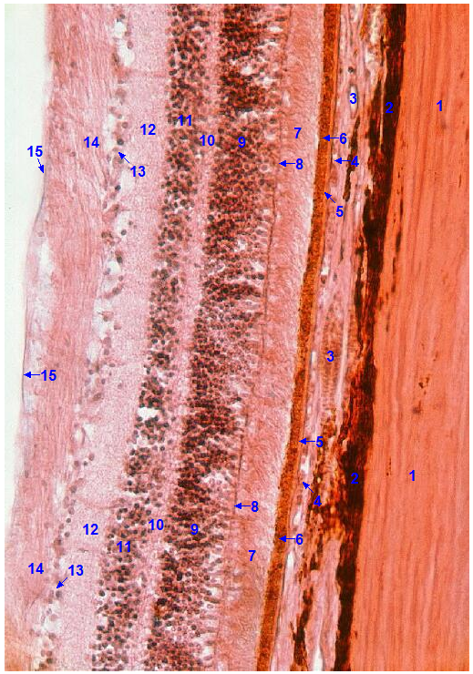
1► sclera
2► stratum_suprachoroidale (lamina_fusca_sclerae)
3► stratum_vasculare
4► stratum_chorocapillare
5► lamina_basalis(Bruch-membrán)
6► retina_pigmenthámja
7► pálcikák és csapok rétege
8► membrana_limitans_externa
9► stratum_granulosum_externum
10► stratum_plexiforme_externum
11► stratum_granulosum_internum
12► stratum_plexiforme_internum
13► stratum_ganglionare
14► n.opticus idegrostjainak rétege, velőtlen idegrostok
15► membrana_limitans_interna
2+4► choroidea
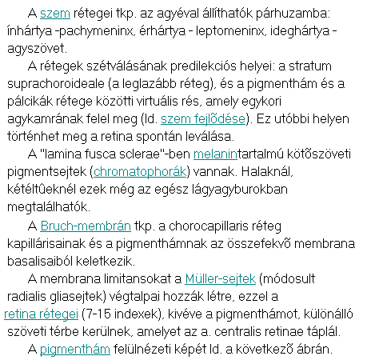


{kind=link}
{kind=link}